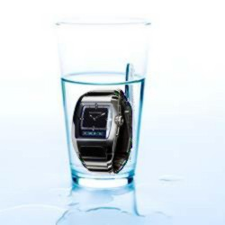
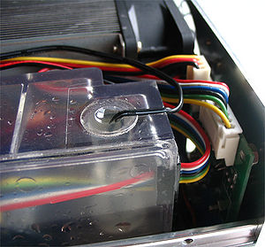

Todo frikipedista tiene que estar listo para cualquier cosa, normalmente para poder tutorear bien a un n00b, pero también puede que se enfrente a una bomba activada a punto de detonar, y debido a que ciertos locos usuarios tienen mucha locura que les escurre visión social os prepararemos para poder desactivar la bomba.
Herramientas
 Se ruega seguir los pasos de esta guía y no usar así las herramientas
Cuando salgas a la calle nunca olvides llevar tus herramientas para desactivar una bomba, porque como seguimos insistiendo, nosotros tenemos que estar listo para poder enfrentarnos incluso contra la peor iguana y siempre debemos de andar con nosotros los implementos para hacer lo que siempre hacemos desactivar satisfactoriamente una bomba.
Estas herramientas son:
- Unas pinzas
- Un reloj
- Un vaso lleno de agua (para llenarlo mira la guía), por si nos da sed
- Un desactivador de bombas (lógico, ¿no?), lo consigues en todas las farmacias.
- Un jamon (te va a dar hambre)
- Un técnico de desactivación de bombas, de preferencia que sea un enano y que quepa en tus bolsillos
- Un desatornillador (para abrirte paso entre la gente y llegar a la bomba)
- Una bomba activada (sino que desactivarías)
- Lo más importante de todo: Unas tijeras
Pasos

Esto pasará si te saltas pasos de la guía.
Tienes que ser muy cuidadoso y seguir los pasos al pié de la letra
- Miras la bomba y te aseguras que es un bomba, si no lo es al paso 17
- Te mentalizas y sacas el vaso de agua y te lo tomas
- Miras el reloj y piensas en que programa te estás perdiendo en la tele
- Sacas tu desactivador de bombas e intentas desactivar la bomba. Nota: El desactivador de bombas es una pomada que se le echa a las bombas y quedan más relucientes, no sirve para desactivarlas realmente
- Ya pulida la bomba te comes el jamón (si no tienes el enano salta al paso 9)
- Le dices a tu técnico enano desactivador de bombas que desactive la bomba
- Te alejas mientras él hace el trabajo (Si la logra desactivar pasate al paso 17, si explota y lo mata también al paso 17, pero como son muy incompetentes, no la desactivará probablemente)
- Matas tú al enano pisoteándolo por no ser eficiente
- Sacas las pinzas y te acercas con cuidado a la bomba (Las pinzas son para que te quites los piojos)
- Sacas tu destornillador y golpeas a los metidos
- Aprovechando que lo tienes afuera, abre la caja de la bomba
- Miras los cables, y buscas el color #565466 (si no lo hallas simplemente elige uno al azar)
- Sacas las tijeras
- LLamas a alguien que tengas cerca, cualquiera
- Le dices que lo corte y corres (si explota no importa... sigues con vida tú)
- Miras lo que pasa (pero alejate más)
- Puedes ser feliz porque ya no tienes la amenaza de la bomba
Tipos
Como los condones, hay diferentes tipos de bombas, porque también hay diferentes tipos de criminales...:
- La bomba clásica: la preferida de los criminales nostálgicos, sirve para recordar viejos tiempos (para matar también, pero esa función queda relegada a un segundo plano...)
- La bomba de relojería: son las que regentan las relojerías-joyerías, arreglan relojes, y te aconsejan para que hagas tus compras antes de explotar...
- La bomba con cables de colorines: este cable no que explota, este cable no que va más rápido ¿por que no pueden meter todo en el mismo cable?
- La bomba sorpresa: la que le meten a una persona en el baño y explota justo en el momento en el cual estás cagando... Muy usada en bodas, comuniones y bautizos.
- La bomba marca acme: nunca explota, a no ser que pase por cerca el que la montó.
- La boooooooooooomba: usada como arma de destrucción masiva por King África, no causa a penas daños físicos, pero los daños psicológicos pueden ser irreversibles...
- La bomba de la piscina: la suelen hacer tíos del "calibre" del andoba anteriormente citado, que al dejar sin hagua la piscina con esa su arma de destrucción masiva, te tiras a nadar, y te mueres por culpa de la caída.
- La bomba de juguete: no explota ni causa daños, pero puede resultar una gran distracción para los hijos de los criminales.
- La bomba de un pozo: es para quitar hagua, y no suele matar, a no ser que el hagua salga con mucha presión, te tire al suelo, y ahí esté colocado un cuchillo apuntando hacia tu cuello...
- La bomba de nitroglicerina: viene en unos botecitos... sí como ese que tienes en la mano... que si los agitas mucho... sí, si los agitas mucho te doy veinte leros... POOOOOM Mwahahahahaha
- La bomba en el bolígrafo: de mecanismo muy simple, coges un bolígrafo y le metes muchos cacharros unidos a un cartucho de dinamita y se la das al primer primo que pase... Por cierto... ¿quieres un bolígrafo?
- La bomba calzoncillo: no coment...
- La bomba bomba: la mejor para no comerse la cabeza, una bomba bomba, como Dios manda...
FAQ
 Si eres daltónico estás muerto...
- ¿Para que sirven las bombas?
- Su primera función fue para ser un abrelatas económico, pero pronto se investigó que podían servir para otras cosas... Actualmente se usan para cosas de mayor provecho, como desatascar váteres.
- ¿Que hago si quiero desactivar una bomba?
- Leerte otra vez el artículo entero y mirar la parte donde te dice como, pringao
- ¿Y si no quiero desactivarla?
- Entonces eres un jodido emo que se quiere suicidar y yo mismo me encargaré de matarte antes de que lo haga la bomba
- ¿Por que las bombas se llaman bombas y no "Jimenas" o "Franciscas"?
- Porque el creador de la bomba no tenía mucho trato con las mujeres, y no se le ocurrió otra cosa que ponerles un nombre derivado del ruído que hacían cuando se corrían...
- ¿Que hay que hacer en caso de que la bomba esté oculta en la comida?
- Comer mucho, las bombas tienen mucho hierro
- ¿Si explota una bomba a mi lado, me moriré?
- ¿Y quién te ha dicho que no estás muerto ya? ¿quien puede creer las cosas de este mundo?...
- ¿Como desactivo una bomba si todos los cables son iguales?
- Utilizas la psicología inversa, mirándola hasta que se desactive
- ¿Que hago si me falta alguno de los instrumentos de arriba?
- En ese caso, el suicidio es la mejor solución
- ¿Eres una bomba disfrazada?
- ¿Puedo intentar desactivarte?
- Si me tocas los cables te muerdo una mano
No olvides que...
No os confundais, es tan sólo un despertador para todos aquellos que tienen el sueño profundo
- ...una bomba SI es un juguete
- ...un juguete no tiene que ser necesariamente una bomba
- ...las bombas explotan
- ...si tienes una bomba en las manos no me la pases
- ...si tengo una bomba en las manos no dudaré en pasártela a ti
- ...los daltónicos no saben distinguir los colores de los cables, y por lo tanto no pueden desactivar bombas
- ...las bombas están hechas de restos de otras bombas, y ni se crean ni se destruyen, sólo explotan
- ...una bomba puede servir como pelota de fútbol
- ...una pelota de fútbol no puede servir como bomba
- ...tienes que recordar todo esto
- ...por eso pone que no te olvides
- ...las bombas explotan (por si no te había quedado claro)
- ...las bombas tienen sentimientos como nosotros, y explotan porque sienten miedo
- ...si te encuentras con una bomba lo mejor que puedes hacer es intentar darle cariño para que no explote
- ...de regalo de cumpleaños te regalaré una bomba de relojería
- ...George W. Bush practica bombafilia
- ...sé tanto de las bombas porque planeo dominar el mundo
- ...las bombas son más un animal de compañía que un arma
- ...las bombas son discriminadas por las granadas
- ...si adoptas bombas tienes espacio reservado en el cielo estadounidense
- ...si le prendes fuego a la mecha de una bomba clásica lo más probable es que no pase nada
- ...si tienes una fábrica de bombas eres mi mejor amigo
- ...la vida es como una caja de explosiones, nunca sabes si te tocará una bomba o una mina antipersona.
- ...las bombas no explotan debajo del hagua porque no pueden respirar
- ...puedes usar los cables que cortes de una bomba de cables para hacerte un látigo
- ...las bombas tienen miedo de que Bush explote
- ...por muy puta que seas usar una bomba de forma cilindrica
o de polla no da gusto
Conclusión
Como tu eres un buen frikipedista , sólo tienes que seguir los pasos que aparecen arriba y puedes salvarte de la amenaza de la bomba... pffffff la vas a cagar
 De: La Frikipedia, la enciclopedia extremadamente seria.
De: La Frikipedia, la enciclopedia extremadamente seria.